Same-day service available today
Licensed, veteran-owned plumbing in Murfreesboro and across Middle Tennessee. You'll talk to a real person when you call — and we show up when we say we will.
What's going on at your place?
Not sure what you need? Call and describe it — we'll figure it out with you over the phone, no charge.
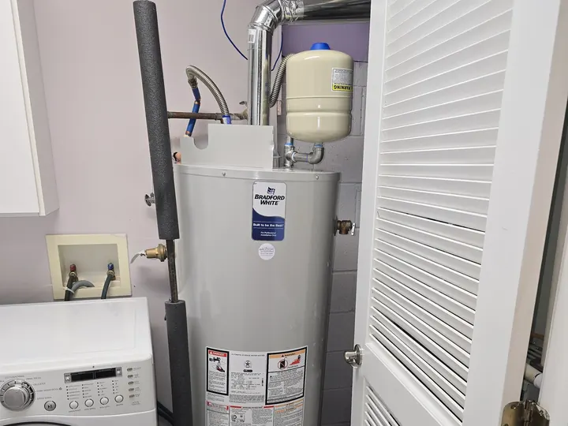
No hot water
Water heater repair and replacement — tank, tankless and heat pump.
Water heater services →
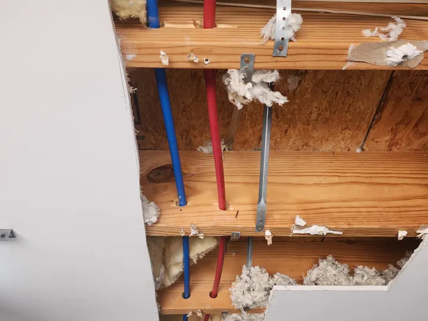
Water where it shouldn't be
Leak detection, pipe repair, sewer line leaks, crawlspace and basement cleanup.
Leak & pipe repair →
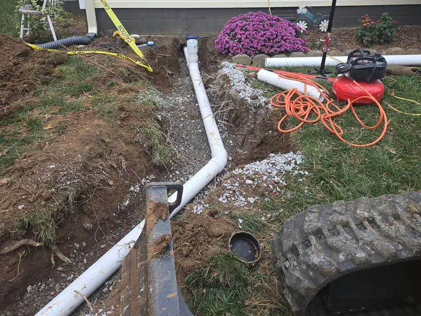
Slow or clogged drain
Drain cleaning for sinks, tubs, showers and main lines.
Drain cleaning →
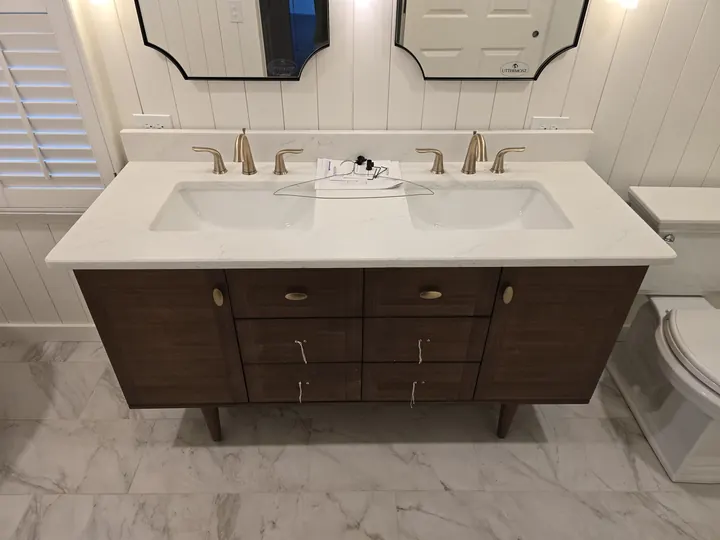
Running toilet or dripping faucet
Toilet, kitchen, bath and outside faucet repair and installation.
Fixture services →
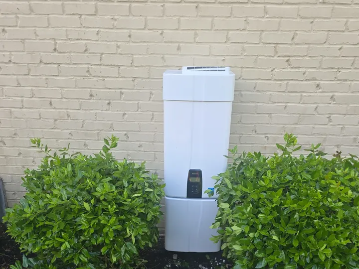
Thinking about tankless
Tankless and heat pump water heater installation, service and repair.
Tankless water heaters →
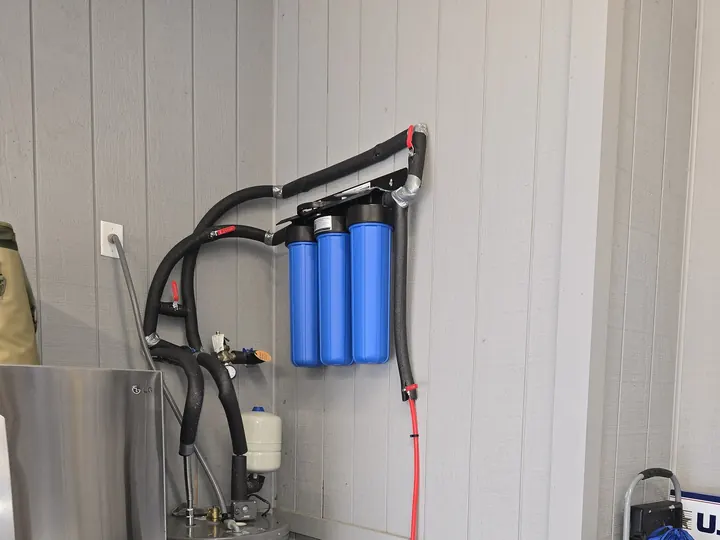
Hard or bad-tasting water
Water softeners, filtration systems and backflow preventer testing.
Water filtration →
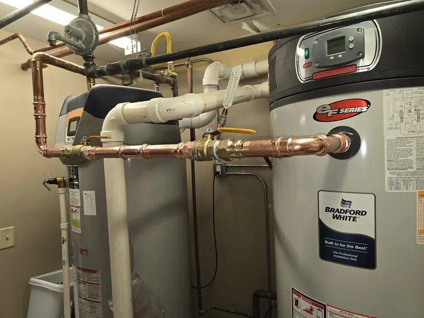
A business or rental property
Commercial repairs, preventive maintenance and backflow testing.
Commercial plumbing →
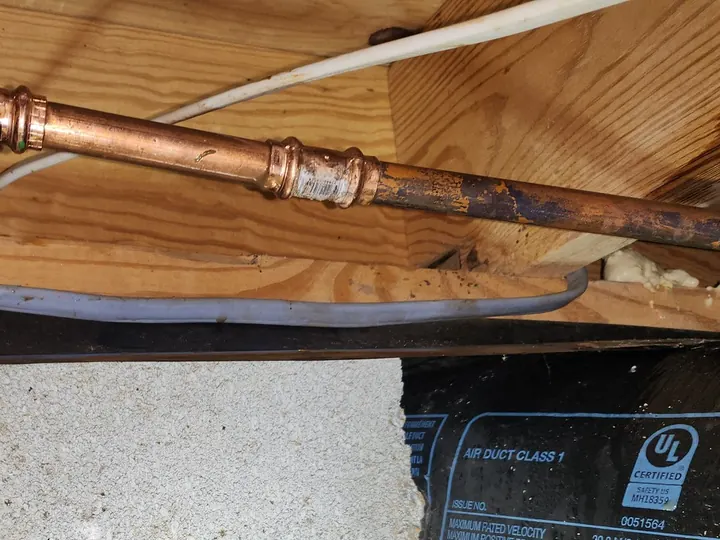
It can't wait
Burst pipes, failed water heaters and leaks that won't stop. Call us first.
Emergency plumbing →
From our job photos
Every photo on this site is from an Angle Stop job. No stock photos.
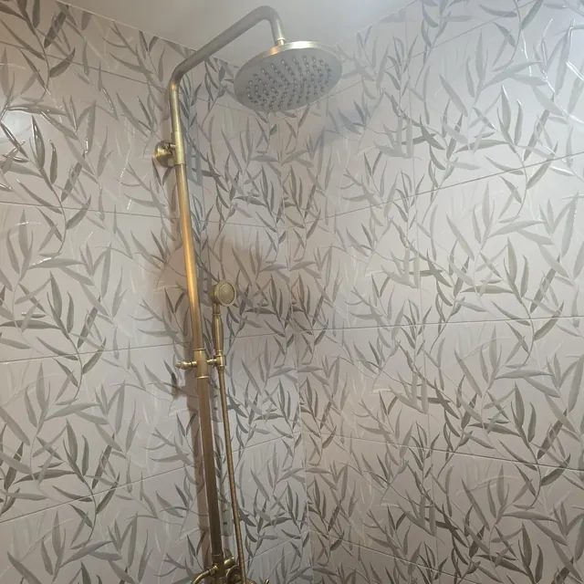
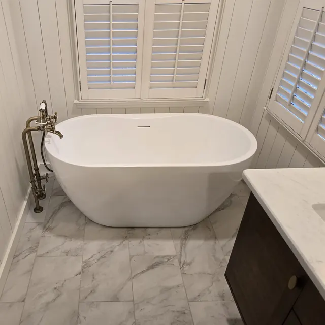
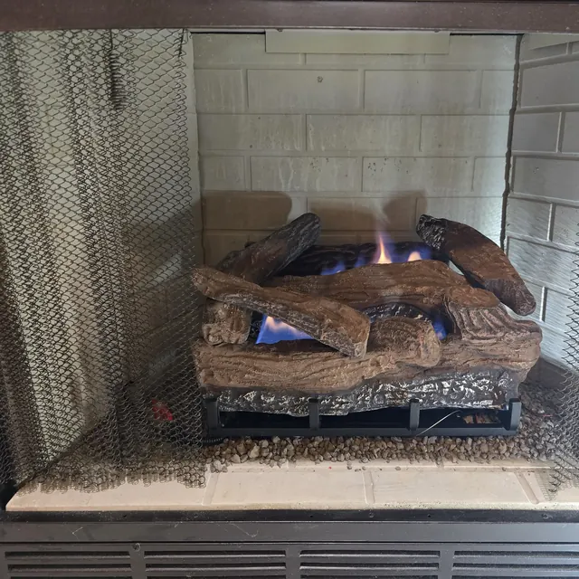
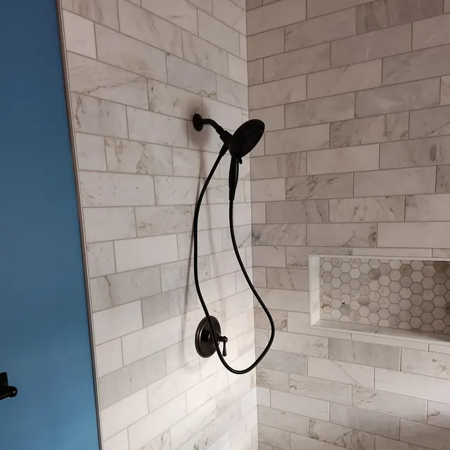
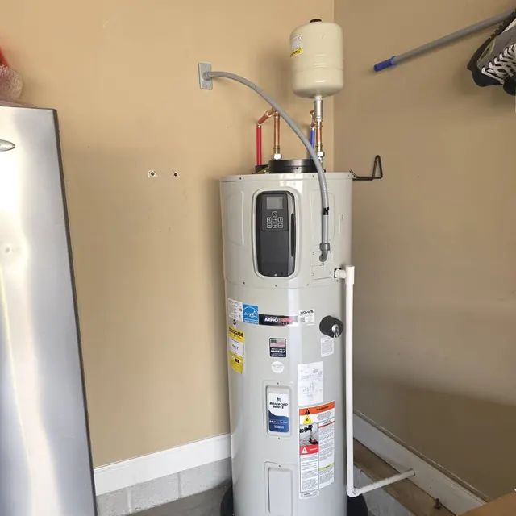
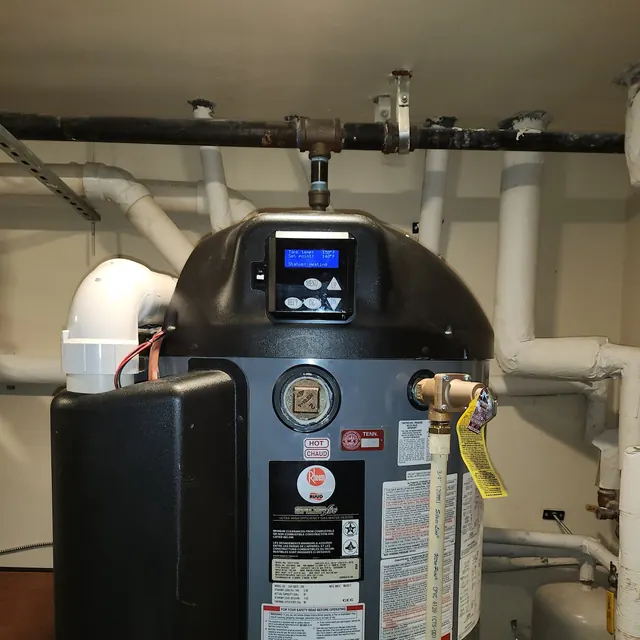
124 reviews, not one under five stars
Jim has completed two separate jobs for me at my house. On each occasion, he was very flexible with scheduling and responsive to my needs. I've been very pleased with his work and his friendly, professional manner. He's definitely my go-to guy for all things plumbing!
"Thanks a ton for choosing us as your go-to plumbing team! We're so happy to hear Jim took such great care of you on both jobs."
Jim from Angle Stop Plumbing was outstanding. He arrived early, diagnosed the issue quickly, and repaired my parents' hot water heater with a high level of professionalism. He took the time to explain every step to my Dad…
Got my new Bradford White AeroTherm Series G2 Hybrid Electric Heat Pump Water Heater installed today by Angle Stop Plumbing! Jim did an outstanding job and I look forward to getting my water conditioner and purifier installed soon as well! Thanks Jim for everything!
"Michael thank you for the kind words, a blessing to serve your family."
We had Jim (Angle Stop) install a new Navien tankless water heater, upgrade our natural gas main line, install an iSpring whole filter and descaler and install an automated water shutoff that integrates with our home automation system…
"Mark thank you for the amazing words, it was a blessing to serve your family! I pray for a fantastic 2026 for you and your family."
Once again, Angle Stop Plumbing came to the rescue when our hybrid water heater failed prematurely. He also went above and beyond the call of duty to help us file our warranty reimbursement claim. Excellent in every way!
"Gary, thank you for the wonderful words, it is a blessing to serve you and your family."
I recently had Angle Stop Plumbing come out for a Water Heater service and to inspect a leak. Jim and Hunter showed up on time and once everything was inspected Jim explained and showed me what needed to be done…
Why Angle Stop
Jim Nephew spent 26 years with a larger plumbing company before opening Angle Stop in 2021, with one idea: do the work right, charge fairly, and treat people the way you'd want your own family treated.
Owned and run by a U.S. Navy veteran, right here in Murfreesboro.
Our faith is how we run this business, not just something on the sign.
If we give you a window, we keep it — and you'll hear from us if anything changes.
No phone trees and no call center. You call, we pick up.

May the Lord direct your hearts into God's love and Christ's perseverance.2 Thessalonians 3:5 Request a free Bible
Where we work
Based on General Raines Drive in Murfreesboro, serving Rutherford County and the communities around it. Not sure if we come to you? Give us a call.
Book in about a minute
Schedule online any time of day, or call and talk it through with us. Either way, you're on the book.